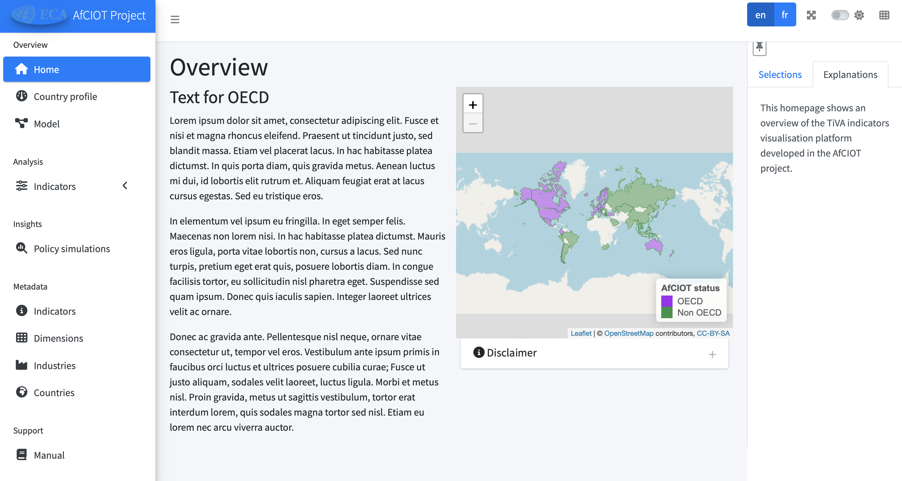
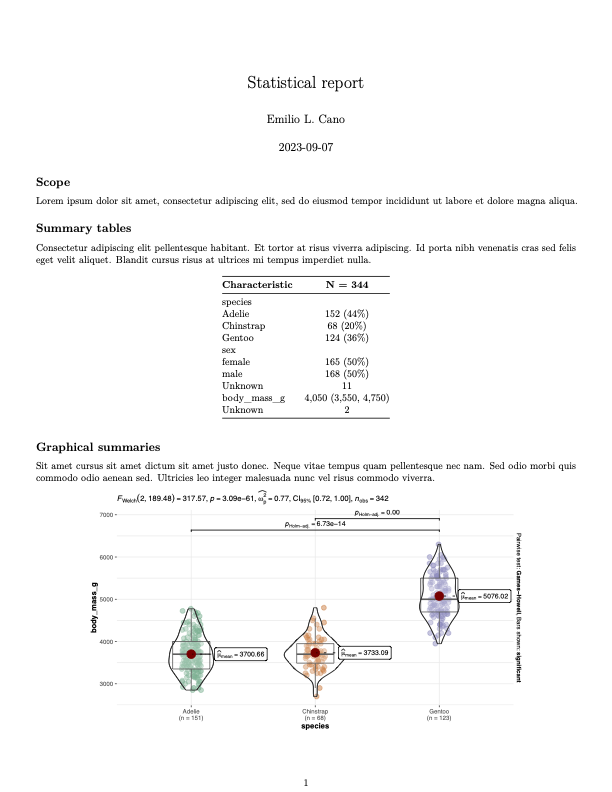
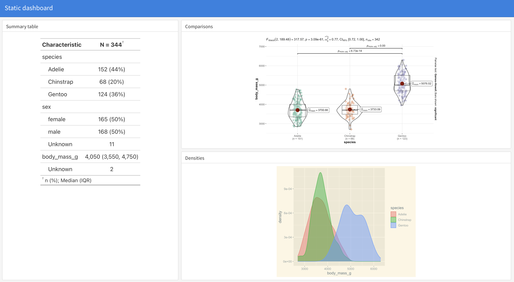
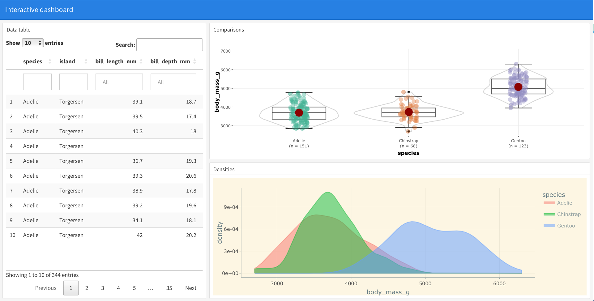

library(shiny)
library(palmerpenguins); library(plotly); library(ggplot2)
ui <- fluidPage(title = "Simple demo app",
sidebarLayout(
sidebarPanel(
varSelectInput("varx", "Explanatory variable", penguins |> select(where(is.numeric))),
varSelectInput("vary", "Response variable", penguins |> select(where(is.numeric))),
varSelectInput("varcol", "Colour variable", penguins |> select(where(is.factor)))),
mainPanel(
plotlyOutput("plot"),
verbatimTextOutput("model")))
)
server <- function(input, output, session){
output$plot <- renderPlotly({
p <- penguins |> ggplot(aes_string(x = input$varx, y = input$vary, col = input$varcol)) +
geom_point()
ggplotly(p)})
output$model <- renderPrint({
m <- lm(get(input$vary) ~ get(input$varx) + get(input$varcol), penguins)
summary(m)})
}
shinyApp(ui = ui, server = server)Cómo usamos R en el DSLAB: ETL, Dashboards, Modelos, y cosas que no imaginas
92ª Reunión Grupo de R de Madrid
Carmen Lancho y Emilio L. Cano
Data Science Laboratory, Universidad Rey Juan Carlos
Contexto
DSLAB: Grupo de investigación en Fundamentos y Aplicaciones de la Ciencia de Datos
Investigación
Docencia
Proyectos de investigación (con entidades públicas y privadas)
Divulgación
Investigación
Proyectos de investigación: COVID
- COVID
Proyectos de investigación: Caderas
Predicción de la capacidad para deambulación al mes de fractura de cadera
Docencia
Seminarios
Primer dashboard en Shiny: https://github.com/carmenlancho/Seminario_CienciasSalud
Gráficos interactivos en R:
Asignaturas en abierto
Docencia
Proyecto de Innovación Educativa: DSEXAMS
Paquete de R: https://github.com/emilopezcano/dsexams
Apps docentes (Monty Hall)
Conclusiones y trabajo futuro
Conclusiones
R nos ayuda en gran diversidad de tareas
R, R markdown, quarto, shiny favorece y facilita su uso
Trabajo futuro
Paquete de R asociado a Tesis doctoral
Más dashboard
Mejorar la generación de apuntes con R
xxx
Dejo contenido de la presentación que hice en SEIO que hay algunas capturas
Cosas a meter:
Paquete placido
Brasil
Dephimática
ONU
Apps docentes (Monty Hall)
….
Paquete
Buenas prácticas ingeniería del software
Control de versiones con git y GitHub: https://github.com/DavidALeo/PlacidoProject/
Documentación con {pkgdown}: https://davidaleo.github.io/PlacidoProject/
Gestión de la configuración con {renv}
Pruebas automatizadas con {testthat}
Opciones de accesibilidad
Aplicación Shiny
Aplicación creada con {golem}, automáticamente como paquete.
Disponible en: https://dleo.shinyapps.io/placidoproject/
🖥️ Live demo 🤞🏻
Dashboards más completos
AfCIOT - TiVA indicators
International Trade, Environmental and Employment Indicators
International and multidisciplinar team
Industry and product classification, gap estimation, policy simulation and visualisation
Key result: A shiny app for reporting, visualisation and policy simulation
Several important challenges for the multinational scope
AfCIOT - TiVA indicators

Acknowledgements:
🖥️ Live demo 🤞🏻
¡Gracias!
emilio.lopez@urjc.es
carmen.lancho@urjc.es
Slides: emilio.lcano.com/p/seio2023
Preguntas
Contenido extra
Algunos ejemplos y consejos sobre dashboards con R
Static reports
Balanced Scorecards: a classical example in the business domain
Statistical reports: typically key results with charts, tables, and interpretation
From its origin, designed to be printed and read in paper, pdf format

Download .Rmd source | See online
Static dashboards
More compact, screen friendly
Download .Rmd source | See online
Interactive dashboards
Static report with interactive elements (widgets)
Download .Rmd source | See online
Limitations
Limited to what the statistician wants to show
Not only statistical experts are going to use the Data Science products.
Decision making at different levels, from process owners to executive managers.
Reactive apps lead stakeholders through the Data Science knowledge discovery path
Well designed interfaces for cutting-edge models foster explainability
Reactive apps
Reactive programming
The key idea of reactive programming is to specify a graph of dependencies so that when an input changes, all related outputs are automatically updated.
Hadley Wickham, Mastering Shiny
The outputs, i.e., plots, tables, etc., are generated by R when the inputs, i.e., user selections, change.
Shiny applications
“Regular” R code
Nothing else needed, all the HTML, CSS and JS is automatically generated
Two “elements”
ui(user interface, web page). Contains inputs and outputsserver. Contains reactive objects and rendering functions
A simple shiny application
🖥️ Live demo 🤞🏻
Adding nice features
Shiny meta frameworks
Sets of packages with functions that generates code for shiny applications. Especially useful to extend the UI capabilities with more JS and CSS.
golemverse by ThinkR
rhinoverse by Appsilon
My workflow
GitHub repository. Branch per feature strategy.
RStudio project
renv::init(). Control of packages versionsSeparate
ui.Randserver.RfilesFolder
Rwith_setup.R,load_data.Rscripts, and functions/modules definition scriptsMultilanguage if needed with {shiny.i18n}
Use of {config} to avoid hard coding things and other uses
Deploy with Docker or at shinyapps.io
Success stories
Some examples
EU Datathon contest 2019
Particle tracking app
Monty Hall problem
Quironsalud & UCLM R&D contract
Tests & Trials (Tentamus group) SÍAGRO app
Smart Cities project
UNECA AfCIOT project
Research and teaching - free access
Smart Cities
Use cases for Tourism, Healthcare, and Infrastructures in Madrid Region
Coherent step-by-step apps for the use cases (load data - visualisation - modelling - getting results)
Some use cases with Shiny, other with Python or Power BI
Example: http://www.citizenlabhub.es/cu/55
Síagro - Animal production SPC
- CRO clinical and nutritional trials
- Shiny app for their customers as a value added service
- Important [productivity improvements]
- Simulation and parameterised reports

92ª Reunión Grupo de R de Madrid, 30 de octubre 2024